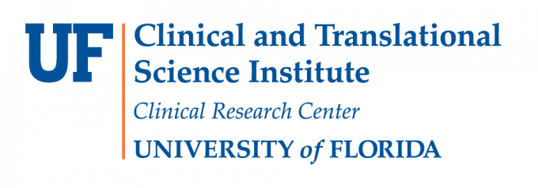
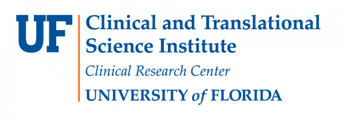

Dr. Ruogu "Rena" Fang
Tenured Associate Professor & Pruitt Family Endowed Fellow
J. Crayton Pruitt Family Department of Biomedical Engineering
Pioneering AI-empowered precision brain health & brain-inspired AI. Ranked Top 100 worldwide in image analysis.

Research Highlights
AI-Empowered Brain Health
Machine learning for brain dynamics, early Alzheimer's diagnosis, and precision interventions.
Brain-Inspired AI
Leveraging neuroscience principles to develop next-generation artificial intelligence.
Medical Image Analysis
Deep learning for CT perfusion, retinal imaging, brain segmentation, and more.
Foundation Models
3D vision foundation models, digital twins, and generative AI for biomedical applications.

Featured In
Open Positions
Postdoc: Fully funded in Medical AI, brain-inspired AI, and precision brain health.
Ph.D.: Multiple fully-funded positions in generative AI, foundation models, and digital twins.
Learn moreLatest News
A collaborative paper entitled "The Role of Artificial Intelligence in Deep Brain Stimulation" published in Seminars in Neurology. [Paper]
Dr. Fang gave a talk on "Intelligence in Nature, Insight in Machines" at Center for Machine Learning, Harvard University.
Paper "Revealing Neurocognitive and Behavioral Patterns by Self-Supervised Manifold Learning from Dynamic Brain Data" published in Nature Computational Science. [Paper]
Congratulations to SMILE Lab student Chintan Acharya on the publication of "TRACE: Applying AI Language Models to Extract Ancestry Information from Curated Biomedical Literature". [Paper]
Dr. Fang invited to give a talk at the Athinoula A. Martinos Center for Biomedical Imaging, MGH & HMS & MIT.
Dr. Fang ranked among the Top 100 (top 0.4%) researchers worldwide in image analysis. One paper accepted by ICCV 2025. One paper accepted by MICCAI 2025.
Affiliations
Tenured Associate Professor
J. Crayton Pruitt Family Dept. of Biomedical Engineering, UF
Visiting Associate Professor
Stanford University, School of Medicine & Humanities and Sciences (2024–2025)
Visiting Associate Professor
Harvard Medical School & Massachusetts General Brigham (2025)
Affiliated Faculty
Associate Director
UF Intelligent Critical Care Center
Affiliated Faculty
Dept. of ECE
Affiliated Faculty
Dept. of Radiology, College of Medicine
Affiliated Faculty
Dept. of CISE
Affiliated Faculty
Center for Cognitive Aging and Memory
Affiliated Faculty
UF Genetics Institute
Affiliated Faculty
UF Health Cancer Center
Affiliated Faculty
Norman Fixel Institute
Selected Honors
Stanford Science Faculty Fellowship
Stanford University
NAI Senior Member
National Academy of Inventors
Rising Star Award
ASEMFL (Engineering)
Pruitt Endowed Fellowship & Tenure
University of Florida
AI Catalyst Award
NVIDIA – University of Florida
Robin Sidhu Young Scientist Award
Society for Brain Mapping
Professional Service
Reviewer For
Join the SMILE Lab
We are looking for passionate researchers. Fully funded Postdoc and Ph.D. positions available in Medical AI, brain-inspired AI, generative AI, foundation models, LLMs, and digital twins.
View Open PositionsFunding & Partners


 
